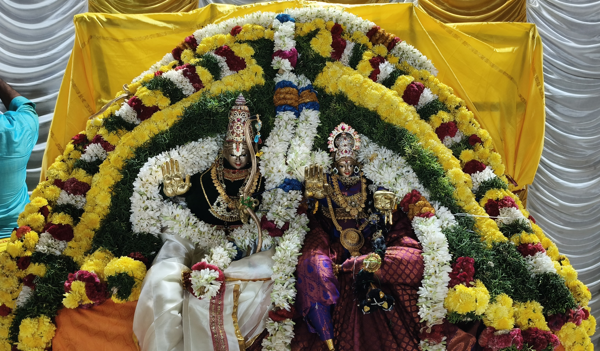

Our Journey of Faith, Service & Community

சுமார் 1377 வருடம் வராகி வருடம் 652 ஆண்டுகளுக்கு முன் இந்தியாவின் வட பகுதியை சார்ந்த வைணவ பெரியோர்கள் ராமாயணம் சிறப்புகள் பற்றி பஜனை பாடல்கள் மூலம் கணுவாய் பகுதியில் இராமாயண சிறப்புகள் எடுத்துரைக்கும் சமயத்தில் ராஜ வம்சம் கொண்ட ராமர் லட்சுமணன் சீதை ஆஞ்சநேயர் பரதன் சத்ருக்கன் ஐம்பொன் விக்ரங்களை வைத்து பூஜித்து வந்தார்கள். அன்று முதல் இந்த பகுதியைச் சார்ந்த பக்தர்கள் சிறிதாக ஆலயம் அமைத்து பூஜித்து வந்தனர். காலப்போக்கில் சிறப்பு பூஜைகளும் நடைபெற்றது. கடந்த 2015 ஆம் ஆண்டு ஆன்மீகப் பெரியோர்கள் பக்தர்கள் ஆலோசனை பேரில் உற்சவ விக்கிரகங்கள் உடன் கல் சிலை வைத்து கோபுர விமானம் அமைத்து கும்பாபிஷேகம் நடைபெற்றது. அன்று முதல் இன்று வரை வைணவ சிறப்பு பூஜைகள் நடைபெற்றுக் கொண்டிருக்கிறது. இக்கோயிலின் சிறப்பு திருமண தடை நீக்கும் திருத்தலமாக உள்ளது. மேலும் 2015 முதல் இன்று வரை திருமணத் தடை நீக்கி வேண்டியவர்கள் 1000க்கும் மேற்பட்ட திருமணங்கள் நடைபெற்றுள்ளது.
கோவில் கிழக்கு முகமாக அமைந்துள்ளது. முன்மண்டபம், மகாமண்டபம், அர்த்த மண்டபம் மற்றும் கருவறையுடன் கூடிய அமைப்பில் அமைத்துள்ளனர். முன்மண்டபத்திலிருந்து மகா மண்டபத்தை அடைந்தால் மையத்தில் மூலவரின் எதிரே இருகரங்களை கூப்பிய நிலையில் நின்ற கோலத்தில் அனுமன் சேவை சாதிக்கின்றார். மகாமண்டப தென்மேற்குப் பகுதியில் தும்பிக்கை ஆழ்வார் அருள்புரிகின்றார். அர்த்த மண்டப நுழைவாயிலின் முன் ஜெயன் விஜயன் ஆகியோர் கம்பீரமாக நின்ற கோலத்தில் காவல் புரிகின்றனர். கருவறையில் லட்சுமணன், ராமர் சீதா மூவரும் நின்ற கோலத்தில் சேவை சாதிக்கின்றனர். மூலத் திருமேனிகளின் கனிவான பார்வையில் புன்னகை ததும்பும் முகத்தை மலர் அலங்காரத்தில் தரிசிப்பது ஒரு பேரானந்தமே. மூலவர் அருகே பல நூறு வருடங்கள் பூஜிக்கப்பட்ட உற்சவ திருமேனிகள் சேவை சாதிக்கின்றனர். கருவறைமீது நரசிம்மர், பெருமாளுடன் கூடிய சுதைச் சிற்பங்களுடன் கூடிய விமானத்தை நிர்மானித்துள்ளனர்.. மகாமண்டபத்தின்மேல் 4 மூலைகளிலும் ஆஞ்சநேயரின் சுதைச் சிற்பங்கள் அலங்கரிக்கின்றன.
கோயிலில் தினசரி பூஜைகள் மற்றும் சிறப்பு திருவிழாக்கள் நடைபெறுகின்றன. முக்கியமான திருவிழாக்களில், தீபாவளி, ரமண வஸந்தம், மற்றும் ராம நவமி போன்றவை மிகவும் பிரபலம் பெற்றுள்ளன.